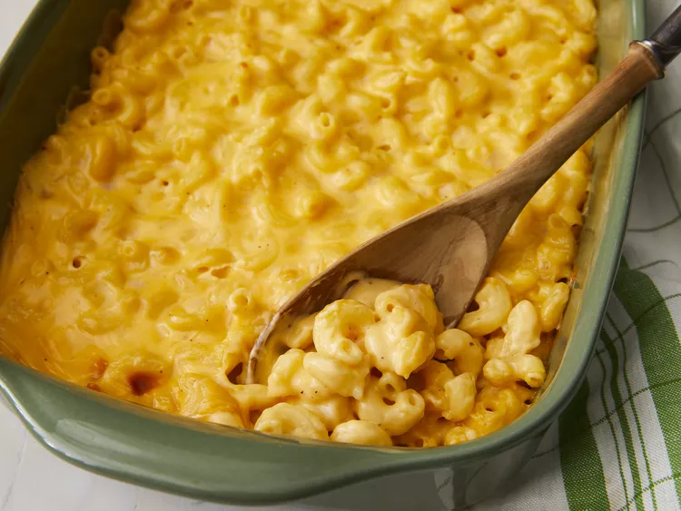

Baked Mac n Cheese Recipe

Mom's Favorite Baked Mac and Cheese
This creamy baked mac and cheese recipe is one I first made three years ago when I was in California. When I got back to Texas, I made it for my mom. This is now her favorite macaroni and cheese. She begs me to make it when I come to visit.
Ingredients
- 1 pound elbow macaroni
- 1/2 cup butter
- 1/2 cup all-purpose flour
- 1/2 teaspoon salt
- 1/4 teaspoon black pepper
- 1/4 teaspoon cayenne pepper
- 1/4 teaspoon paprika
- 4 cups milk
- 4 cups shredded sharp Cheddar cheese
- 1 cup bread crumbs
Steps
- Preheat oven to 350 degrees F (175 degrees C).
- Bring a large pot of lightly salted water to a boil. Add macaroni and cook for 8 to 10 minutes or until al dente; drain.
- In a saucepan over medium heat, melt butter. Stir in flour, salt, pepper, cayenne, and paprika. Slowly whisk in milk. Cook, stirring constantly, until thickened. Stir in cheese until melted.
- In a large bowl, combine macaroni and cheese sauce. Pour into a greased 9x13 inch baking dish. Top with bread crumbs.
- Bake in preheated oven for 30 minutes, or until golden brown.
Back to Recipes